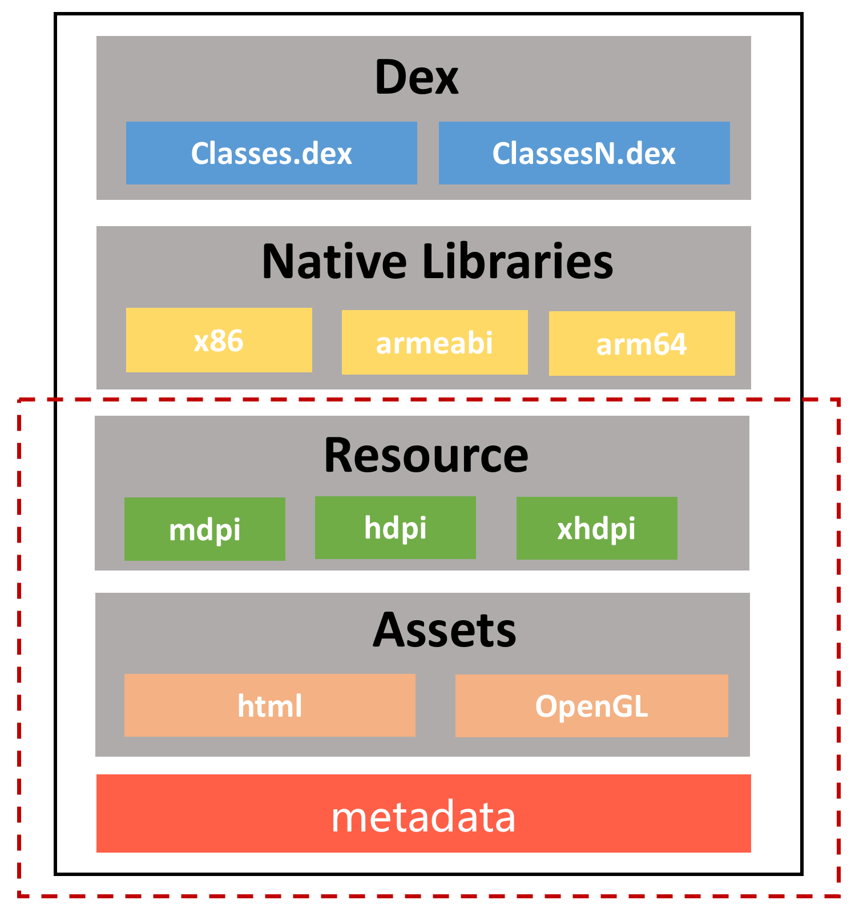
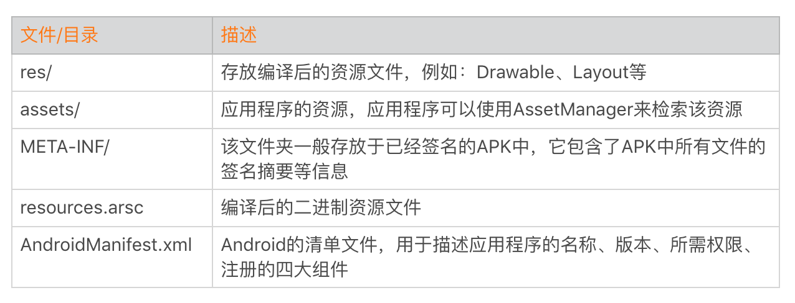
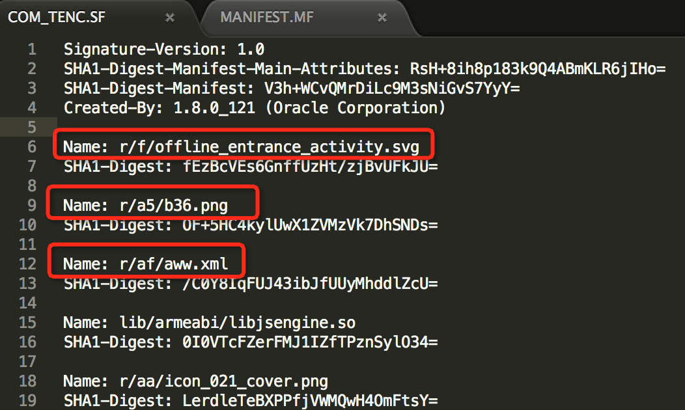
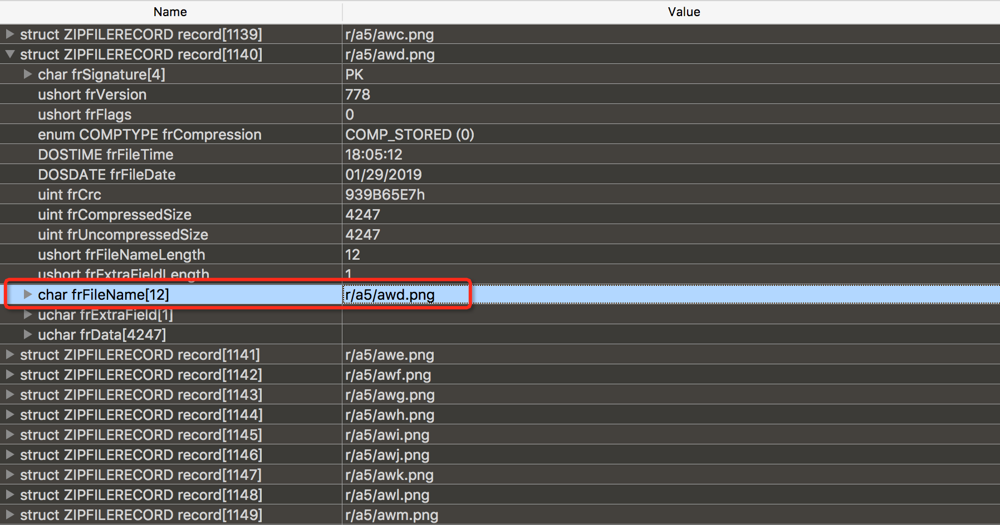
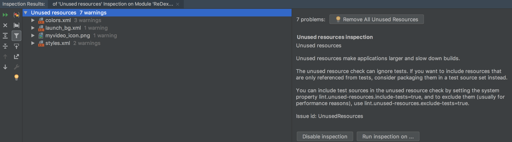
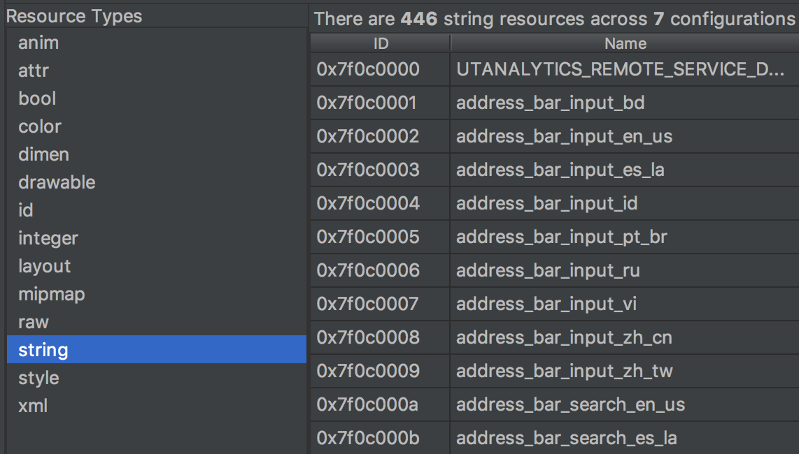
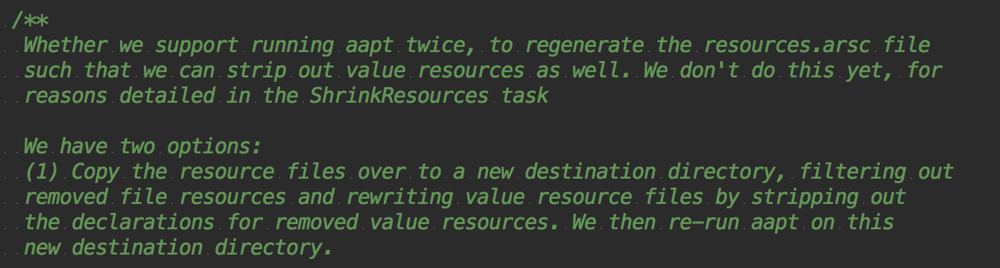
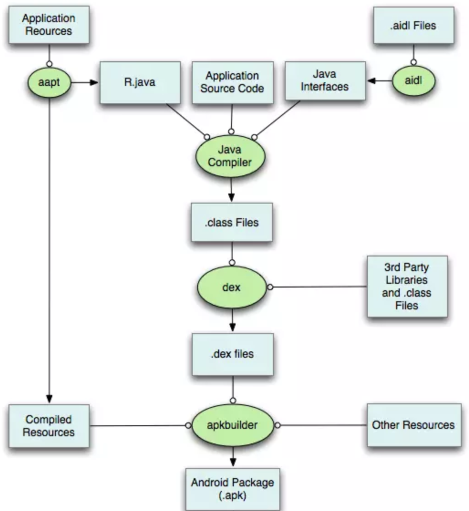
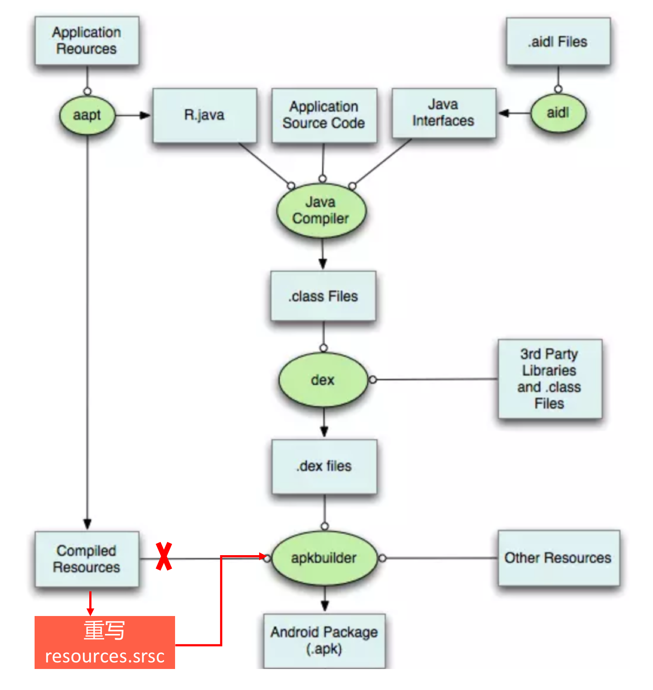

上一期我们聊了 Dex 与 Native Library 的优化，是不是还有点意犹未尽的感觉呢？那安装包还有哪些可以优化的地方呢？

请看上面这张图，Assets、Resource 以及签名 metadata 都是安装包中的“资源”部分，今天我们就一起来看看如何进一步优化资源的体积。
AndResGuard 工具
在美团的一篇文章《Android App 包瘦身优化实践》中，也讲到了很多资源优化相关的方法，例如 WebP 和 SVG、R 文件、无用资源、资源混淆以及语言压缩等。
在我们的安装包中，资源相关的文件具体有下面这几个，它们都是我们需要优化的目标文件。

想使用好AndResGuard工具，需要对安装包格式以及 Android 资源编译的原理有很深地理解，它主要有两个功能，一个是资源混淆，一个是资源的极限压缩。
接下来我们先来复习一下这个工具的核心实现，然后再进一步思考还有哪些地方需要继续优化。
1. 资源混淆
ProGuard 的核心优化主要有三个：Shrink、Optimize 和 Obfuscate，也就是裁剪、优化和混淆。当初我在写 AndResGuard 的时候，希望实现的就是 ProGuard 中的混淆功能。
资源混淆的思路其实非常简单，就是把资源和文件的名字混淆成短路径：
Proguard -> Resource ProguardR.string.name -> R.string.a res/drawable/icon -> res/s/a那么这样的实现究竟对哪些资源文件有优化作用呢？
-
resources.arsc。因为资源索引文件 resources.arsc 需要记录资源文件的名称与路径，使用混淆后的短路径 res/s/a，可以减少整个文件的大小。
-
metadata 签名文件。签名文件 MF 与 SF都需要记录所有文件的路径以及它们的哈希值，使用短路径可以减少这两个文件的大小。

- ZIP 文件索引。ZIP 文件格式里面也需要记录每个文件 Entry 的路径、压缩算法、CRC、文件大小等信息。使用短路径，本身就可以减少记录文件路径的字符串大小。

资源文件有一个非常大的特点，那就是文件数量特别多。以微信 7.0 为例，安装包中就有 7000 多个资源文件。所以说，资源混淆工具仅仅通过短路径的优化，就可以达到减少 resources.arsc、签名文件以及 ZIP 文件大小的目的。
既然移动优化已经到了“深水区”，正如 Dex 和 Library 优化一样，我们需要对它们的格式以及特性有非常深入的研究，才能找到优化的思路。而我们要做的资源优化也是如此，要对 resources.arsc、签名文件以及 ZIP 格式需要有非常深入的研究与思考。
2. 极限压缩
AndResGuard 的另外一个优化就是极限压缩，它的极限压缩功能体现在两个方面：
-
更高的压缩率。虽然我们使用的还是 Zip 算法，但是利用了 7-Zip 的大字典优化，APK 的整体压缩率可以提升 3% 左右。
-
压缩更多的文件。Android 编译过程中，下面这些格式的文件会指定不压缩；在 AndResGuard 中，我们支持针对 resources.arsc、PNG、JPG 以及 GIF 等文件的强制压缩。
/* these formats are already compressed, or don't compress well */static const char* kNoCompressExt[] = { ".jpg", ".jpeg", ".png", ".gif", ".wav", ".mp2", ".mp3", ".ogg", ".aac", ".mpg", ".mpeg", ".mid", ".midi", ".smf", ".jet", ".rtttl", ".imy", ".xmf", ".mp4", ".m4a", ".m4v", ".3gp", ".3gpp", ".3g2", ".3gpp2", ".amr", ".awb", ".wma", ".wmv", ".webm", ".mkv"};这里可能会有一个疑问，为什么 Android 系统会专门选择不去压缩这些文件呢？
-
压缩效果并不明显。这些格式的文件大部分本身已经压缩过，重新做 Zip 压缩效果并不明显。例如 PNG 和 JPG 格式，重新压缩只有 3%～5% 的收益，并不是十分明显。
-
读取时间与内存的考虑。如果文件是没有压缩的，系统可以利用 mmap 的方式直接读取，而不需要一次性解压并放在内存中。
Android 6.0 之后 AndroidManifest 支持不压缩 Library 文件，这样安装 APK 的时候也不需要把 Library 文件解压出来，系统可以直接 mmap 安装包中的 Library 文件。
android:extractNativeLibs=“true”
简单来说，我们在启动性能、内存和安装包体积之间又做了一个抉择。在上一期中我就讲过对于 Dex 和 Library 来说，最有效果的方法是使用 XZ 或者 7-Zip 压缩，对于资源来说也是如此，一些比较大的资源文件我们也可以考虑使用 XZ 压缩，但是在首次启动时需要解压出来。
进阶的优化方法
学习完 AndResGuard 工具的混淆和压缩功能的实现原理后，可以帮助我们加深对安装包格式以及 Android 资源编译的原理的认识。
但 AndResGuard 毕竟是几年前的产物，那现在又有哪些新的进阶优化方法呢？
1. 资源合并
在资源混淆方案中，我们发现资源文件的路径对于 resources.arsc、签名信息以及 ZIP 文件信息都会有影响。而且因为资源文件数量非常非常多，导致这部分的体积非常可观。
那我们能不能把所有的资源文件都合并成同一个大文件，这样做肯定会比资源混淆方案效果更好。
事实上，大部分的换肤方案也是采用这个思路，这个大资源文件就相当于一套皮肤。因此我们完全可以把这套方案推广开来，但是实现起来还是需要解决不少问题的。
- 资源的解析。我们需要模拟系统实现资源文件的解析，例如把 PNG、JPG 以及 XML 文件转换为 Bitmap 或者 Drawable，这样获取资源的方法需要改成我们自定义的方法。
// 系统默认的方式Drawable drawable = getResouces().getDrawable(R.drawable.loading); // 新的获取方式Drawable drawable = CustomResManager.getDrawable(R.drawable.loading);那为什么我们不像 SVG 那样，直接把这些解析完的所有 Drawable 全部丢到系统的缓存中呢？这样代码就无需做太多修改？之所以没这么做主要是考虑对内存的影响，如果我们把全部的资源文件一次性全部解析，并且丢到系统的缓存中，这部分会占用非常大的内存。
- 资源的管理。考虑到内存和启动时间，所有的资源也是用时加载，我们只需要使用 mmap 来加载“Big resource File”。同时我们还要实现自己的资源缓存池 ResourceCache，释放不再使用的资源文件，这部分内容你可以参考类似 Glide 图片库的实现。
我在逆向 Facebook 的 App 的时候也发现，它们的资源和多语言基本走的完全是自己的流程。在“UI 优化”时我就说过，我们先在系统的框架下尝试做了很多的优化，但是渐渐发现这样的方式依然要受系统的各种制约，这时就要考虑去突破系统的限制，把所有的流程都接管过来。
当然我们也需要在性能和效率之间寻找平衡点，要看自己的应用当前更重视性能提升还是开发效率。
2. 无用资源
AndResGuard 中的资源混淆实现的是 ProGuard 的 Obfuscate，那我们是否可以同样实现资源的 Shrink，也就是裁剪功能呢？应用通过长时间的迭代，总会有一些无用的资源，尽管它们在程序运行过程不会被使用，但是依然占据着安装包的体积。
事实上，Android 官方早就考虑到这种情况了，下面我们一起来看看无用资源优化方案的演进过程。
第一阶段：Lint
从 Eclipse 时代开始，我们就开始使用Lint这个静态代码扫描工具，它里面就支持 Unused Resources 扫描。

然后我们直接选择“Remove All Unused Resources”，就可以轻松删除所有的无用资源了。既然它是第一阶段的方案，那 Lint 方案扫描具体的缺点是什么呢？
Lint 作为一个静态扫描工具，它最大的问题在于没有考虑到 ProGuard 的代码裁剪。在 ProGuard 过程我们会 shrink 掉大量的无用代码，但是 Lint 工具并不能检查出这些无用代码所引用的无用资源。
第二阶段：shrinkResources
所以 Android 在第二阶段增加了“shrinkResources”资源压缩功能，它需要配合 ProGurad 的“minifyEnabled”功能同时使用。
如果 ProGuard 把部分无用代码移除，这些代码所引用的资源也会被标记为无用资源，然后通过资源压缩功能将它们移除。
android { ... buildTypes { release { shrinkResources true minifyEnabled true } }}是不是看起来很完美，但是目前的 shrinkResources 实现起来还有几个缺陷。
- 没有处理 resources.arsc 文件。这样导致大量无用的 String、ID、Attr、Dimen 等资源并没有被删除。

- 没有真正删除资源文件。对于 Drawable、Layout 这些无用资源，shrinkResources 也没有真正把它们删掉，而是仅仅替换为一个空文件。为什么不能删除呢？主要还是因为 resources.arsc 里面还有这些文件的路径，具体你可以查看这个issues。
所以尽管我们的应用有大量的无用资源，但是系统目前的做法并没有真正减少文件数量。这样 resources.arsc、签名信息以及 ZIP 文件信息这几个“大头”依然没有任何改善。
那为什么 Studio 不把这些资源真正删掉呢？事实上 Android 也知道有这个问题，在它的核心实现ResourceUsageAnalyzer中的注释也写得非常清楚，并尝试解决这个问题提供了两种思路。

如果想解答系统为什么不能直接把这些资源删除，我们需要先回过头来重温一下 Android 的编译流程。

-
由于 Java 代码需要用到资源的 R.java 文件，所以我们就需要把 R.java 提前准备好。
-
在编译 Java 代码过程，已经根据 R.java 文件，直接将代码中资源的引用替换为常量，例如将 R.String.sample 替换为 0x7f0c0003。
-
.ap_ 资源文件的同步编译，例如 resources.arsc、XML 文件的处理等。
如果我们在这个过程强行把无用资源文件删除，resources.arsc 和 R.java 文件的资源 ID 都会改变（因为默认都是连续的），这个时候代码中已经替换过的 0x7f0c0003 就会出现资源错乱或者找不到的情况。
因此系统为了避免发生这种情况，采用了折中的方法，并没有二次处理 resources.arsc 文件，只是仅仅把无用的 Drawable 和 Layout 文件替换为空文件。
第三阶段：realShrinkResources
那怎么样才能真正实现无用资源的删除功能呢？ResourceUsageAnalyzer 的注释中就提供了一个思路，我们可以利用 resources.arsc 中 Public ID 的机制，实现非连续的资源 ID。
简单来说，就是 keep 住保留资源的 ID，保证已经编译完的代码可以正常找到对应的资源。

但是重写 resources.arsc 的方法会比资源混淆更加复杂，我们既要从这个文件中抹去所有的无用资源相关信息，还要 keep 住所有保留资源的 ID，相当于把整个文件都重写了。
正因为异常复杂，所以目前 Android 还没有提供这套方案的完整实现。我最近也正在按照这个思路来实现这套方案，希望完成后可以尽快开源出来。
总结
今天我们回顾了 AndResGuard 工具的实现原理，也学习了两种资源优化的进阶方式。特别是无用资源的优化，你可以看到尽管是无所不能的 Google，也并没有把方案做到最好，依然存在一些妥协的地方。
其实这种不完美的地方还有很多很多，也正是有了这些不完美的地方，才会出现各种各样优秀的开源方案。也因此我们才会不断思考如何突破系统的限制，去实现更多、更底层的优化。
课后作业
对于 Android 的编译流程，你还有不理解的地方吗？对于安装包中的资源，你还有哪些好的优化方案？欢迎留言跟我和其他同学一起讨论。
不知道你有没有想过，其实“第三阶段”的无用资源删除方案也并不是终极解决方案，因为它并没有考虑到无用的 Assets 资源。
但是对于 Assets 资源，代码中会有各种各样的引用方式，如果想准确地识别出无用的 Assets 并不是那么容易。当初在 Matrix 中，我们尝试提供了一套简单的实现，你可以参考UnusedAssetsTask。
希望你在课后也可以进一步思考，我们可以如何识别出无用的 Assets 资源，在这个过程中会遇到哪些问题？
COMMUNITY NOTES
读者评论
哈哈，shwen哥，重写arsc文件我们在matrix里其实已经实现了，借你的文章广告下。
请问 shrinkResources 输入的无用文件相关代码在哪里看呢？实测无用 drawable 文件会压缩为一个内容仅为“<x/>”文件，但是无用 layout 文件并无任何改动
有没有一个好的，通用的linter或者真正的resourceshirk 工具？
极限压缩这部分说的更高效率的压缩是指压缩的什么，最后APK的压缩算法？如果是那么系统安装如何解压？还是说优化了现有的zip算法？
Lint 只能静态分析 ，但是有些动态生成的就没法识别，比如我了 kotlin-android-extensions， 有些 id 使用了，但是 Lint 却不知道，有没有什么工具可以 分析编译后 代码？有个插件 statistics 可以统计代码。
老师您好，我从网上了解到shrinkResources=true时可能会导致一些应用崩溃的问题，那还要去使用它吗？
所有资源文件合成一个大文件，是一个zip？